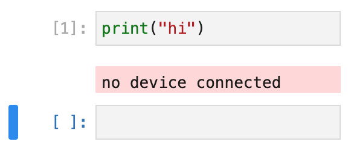

Getting Started¶
ide49 offers a range of features including a code editor, compilers (e.g. to compile MicroPython), an MQTT broker, etc.
All interaction with microcontrollers takes place in the Jupyter Lab service. Jupyter is a popular interactive Python programming environment. You can find many online tutorials and videos. Below we quickly go over the main features with special focus on the customizations for programming microcontrollers.
Jupyter Lab¶
To access Jupyter Lab in ide49, go to https://iot49.local/jupyter (change the name if you modified the DNS name of the Raspberry Pi) or from the Jupyter link of ide49 dashboard at https://iot49.local.
You will be presented with the page below.

For illustration, the key features are highlighted. The main features are a Python 3 Kernel that executes Python 3 on the host (Raspberry Pi), a Terminal for running shell commands, and, the IoT Kernel for programming microcontrollers.
To start an IoT Kernel, click on its icon:

Like all Jupyter kernels, you type code into cells, and click shift-enter (return while holding down the shift key) to execute it.
For example:
{kind=link}
Unless you have connected a microcontroller with MicroPython installed, you get this error.
Like other Jupyter kernels, the IoT Kernel exposes its functionality through magics; lines that begin with a percent sign % in the first column. To get a list of magics available in the IoT Kernel, execute %lsmagic% by typing it into an empty cell and hitting shift-enter:
%lsmagic
Line Magic: -h shows help (e.g. %discover -h)
%cat Print contents of named file on microcontroller
%cd Change current working directory on host.
%connect Connect to device
%cp Copy files between host and microcontroller.
%discover Discover available devices
%gettime Query microcontroller time
%loglevel Set logging level.
%lsmagic List all magic functions.
%mkdirs Create all directories specified by the path, as needed.
%name Name of currently connected microcontroller.
%pip Install packages from PyPi
%platform sys.platform of currently connected device.
%rdiff Show differences between microcontroller and host directories
%register Register device
%rlist List files on microcontroller
%rm Delete files relative to path.
%rsync Synchronize microcontroller to host directories
%softreset Reset microcontroller. Similar to pressing the reset button.
%store Copy variables between microcontroller and storage.
%synctime Synchronize microcontroller time to host
%uid UID of currently connected microcontroller.
%unregister Unregister device
%upip Install MicroPython packages.
%url URL of currently connected microcontroller.
! Pass line to bash shell for evaluation.
Cell Magic: -h shows help (e.g. %%connect -h)
%%bash Pass cell to bash shell for evaluation.
%%connect Evaluate code sequentially on named devices.
%%host Pass cell to host (cPython) for evaluation.
%%service Evaluate in named container using ssh.
%%ssh Pass cell body to ssh.
%%writefile Write cell contents to file.
Code preceded by the %%host magic is executed on the host. The documentation for the iot-kernel has more information.
%%host
import sys
print(sys.platform)
linux
MicroPython¶
Connect a microcontroller to one of the USB ports of the Raspberry Pi. If MicroPython is not yet installed, follow the instructions here.
Then run the %discover magic:
%discover
50:02:91:a1:a7:2c serial:///dev/ttyUSB0
Discover searches all ports for available devices. For each device it reports a hexadecimal string that uniquely identifies the chip and the port it is connected to, e.g. serial:///dev/ttyUSB0 for a device connected to serial port /dev/ttyUSB0.
Connect to the device:
%connect 50:02:91:a1:a7:2c
Connected to 50:02:91:a1:a7:2c @ serial:///dev/ttyUSB0
Code typed into notebook cells is sent to the microcontroller for execution and results reported back. For example:
for i in range(6):
print(i, i**5)
0 0
1 1
2 32
3 243
4 1024
5 3125
%%connect with two percent signs runs a code sequence on multiple processors:
%%connect --host 50:02:91:a1:a7:2c
import sys
print("platform: {:7} implementation: {}".format(sys.platform, sys.implementation.name))
----- HOST
----- 50:02:91:a1:a7:2c
platform: esp32 implementation: micropython
platform: linux implementation: cpython
We are indeed talking to MicroPython.
Naming devices¶
The string 50:02:91:a1:a7:2c is the UID of the microcontroller, a unique identifier programmed into the controller by the manufacturer. The %discover magic obtains it by running the following code snippet on the controller:
uid = bytes(6)
try:
import machine
uid = machine.unique_id()
except:
import microcontroller
uid = microcontroller.cpu.uid
print(":".join("{:02x}".format(x) for x in uid), end="")
The IoT Kernel uses UIDs to unambiguously distinguish devices. Identifying microcontrollers with hexadecimal strings is useful for keeping track of devices (I have an entire drawer full), but about as informative and convenient to remember as a phone number.
Fortunately it is easy to associate the device with a “name”, by simply recording this information in a file and saving it to folder $IOT_PROJECTS/devices. The %%writefile magic does this for us:
%%writefile $IOT_PROJECTS/devices/pico.yaml
pico:
uid: 50:02:91:a1:a7:2c
!cat $IOT_PROJECTS/devices/pico.yaml
pico:
uid: 50:02:91:a1:a7:2c
Change the uid to match your microcontroller and the word pico to the name you want to give. The filename is not important, as long as it ends with .yaml.
After this, %discover reports the name instead of the UID:
%discover
pico serial:///dev/ttyUSB0